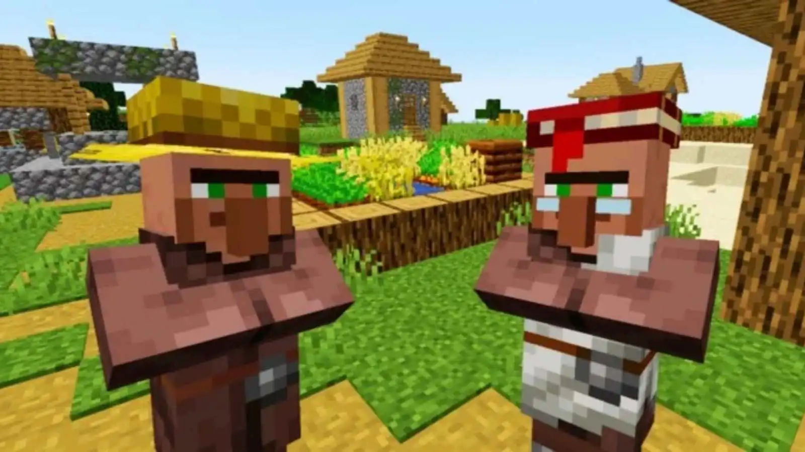

Hier kan je een aantal dingen over Minecraft vinden. Voor de volledige wiki moet je naar deze website gaan.
Hier kan je een aantal dingen over Minecraft vinden. Voor de volledige wiki moet je naar deze website gaan.
Overworld:
De overworld is de dimensie waar je jezelf meteen aan het begin van de game zal bevinden. Het is van alle dimensies de veiligste en als je dood gaat zonder spawnpoint zul je hier altijd spawnen.
In de overworld kan je 51 biomes vinden. Dit zijn een soort klimaten. Hier kan je allemaal verschillende gebouwen, dieren en blokken vinden.
Villagers:
Villagers zijn te vinden in dorpen. Deze dorpen bestaan uit meerdere verschillende gebouwen. Er zijn ook veel verschillende villagers. Elke village ziet er anders uit en dat ligt ook deels aan de biome. Er zijn veel soorten beroepen die een villager kan hebben. Je kan met emeralds met villagers traden voor allemaal spullen. Villagers zeggen dit.
